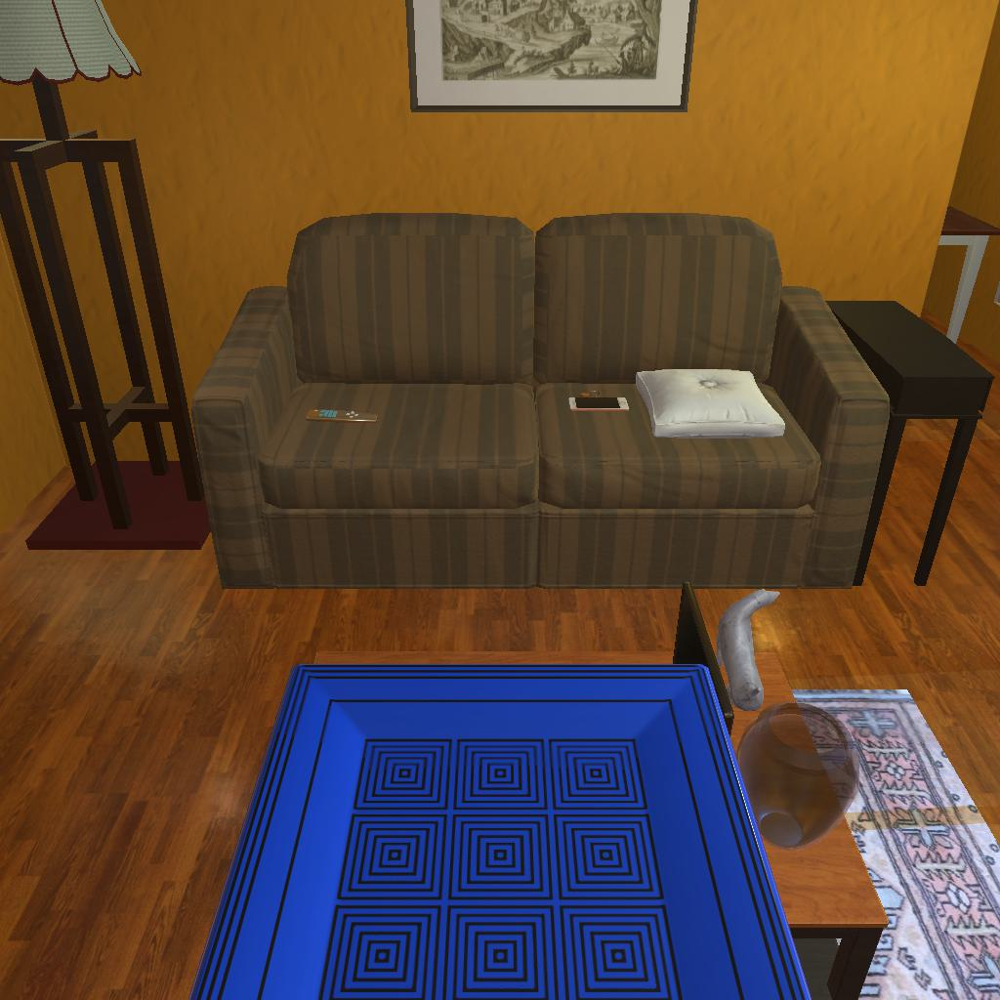

---------------------------------------------------------task: 3---------------------------------------------------------
--------------------------------------------------------------------------------------------------------------------------------------------------------------------
--------------------------------------------------------------------------------------------------------------------------------------------------------------------
Step:--------------------------------------------------------------------------13-------------------------------------------------------------------------------
----------------------------------------
VLM Prompt:
Image1:
**Instruction**
1. Analyze the provided image to identify all visible household objects, focusing on those relevant to the task description "look at plate under the floorlamp."
2. Use the analysis of the image and the task hint "The agent must find an object of the desired type, locate and turn on a light source with the desired object in-hand." to answer the question: what is the most reasonable action in the choices for the task description "look at plate under the floorlamp"?
4. Decide and write the answer using the template: The answer is: (i): , where i is the real number. If there is no desired object in the image, search every place based on **Initial Observation** to find the object. And if no one is exactly correct, choose a similar answer.
**Initial Observation**
You are in the middle of a room. Looking quickly around you, you can see armchair (1), garbagecan (1), tvstand (1), shelf (1-5), sofa (1), coffeetable (1), sidetable (1-2), drawer (1)
**Answer Choices**
(1): go to armchair 1
(2): go to garbagecan 1
(3): go to tvstand 1
(4): go to shelf 2
(5): go to sofa 1
(6): go to sidetable 1
(7): go to sidetable 2
(8): go to drawer 1
(9): go to shelf 3
(10): go to shelf 4
(11): go to shelf 5
(12): put plate 1 in/on coffeetable 1
(13): use floorlamp 1
(14): examine plate 1
(15): examine coffeetable 1
**Answer**
Let's think step by step by following the instructions.
----------------------------------------
----------------------------------------
Original Response:
First, we need to identify the relevant objects in the image based on the task description "look at plate under the floorlamp." In the image, we can see a sofa with a floorlamp next to it, but no plate is visible under the floorlamp.
Based on the task hint, we understand that the agent must find a plate, then locate and turn on a light source with the plate in hand. Since no plate is visible in the image, we must search for one based on the Initial Observation.
The Initial Observation does not list a plate, but it mentions places where a plate could be located, such as on shelves, side tables, or in a drawer. Since the task is to look at the plate under the floorlamp, it is reasonable to assume that the plate should be nearby. Therefore, the most logical places to look for the plate would be the side tables or shelves near the sofa and floorlamp.
Given the answer choices, the most reasonable action would be to search the side tables first, as they are closer to the floorlamp than the shelves. Between the two side tables, there's no indication of which one is more likely to have the plate, so we will choose one arbitrarily.
The answer is: (6): go to sidetable 1
----------------------------------------
----------------------------------------
>>> Refine Original VLM Response and Get Pure Action: go to sidetable 1
----------------------------------------
-----------------------------------------------------------------
Running time: 24.700090408325195 seconds
Total Money: 0.8724399999999999
-----------------------------------------------------------------
-----------------------------------------------------------------
Text Observation:You arrive at loc 7. On the sidetable 1, you see a floorlamp 1, a pillow 1, a laptop 1, a vase 1, a statue 1, a statue 2, a cellphone 1, a plate 2, a remotecontrol 1, a keychain 1, and a newspaper 1.
-----------------------------------------------------------------
UNSUCCEED